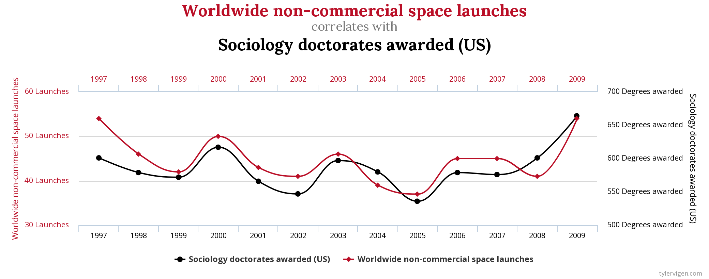

Intro to Causality
Categorical Variables
Data
Our multilinear regression: \[y = \alpha + \beta x_1 + \cdots + \beta x_n\]
So far, we have only considered real variables: (\(x_i \in \mathbb{R}\)).
- ex: \(x_{\text{gdp}} = \alpha + \beta_1 x_{\text{unemployment}} + \beta_2 x_{\text{inflation}}\)
How do we deal with the following cases?
- binary variable: \(x\in \{0,1\}\) (or \(\{True, False}\))
- ex: \(\text{gonetowar}\), \(\text{hasdegree}\)
- categorical variable:
- ex: survey result (0: I don’t know, 1: I strongly disagree, 2: I disagree, 3: I agree, 4: I strongly agree)
- there is no ranking of answers
- when there is ranking: hierarchical index
- nonnumerical variables:
- ex: (flower type: \(x\in \text{myosotis}, \text{rose}, ...\))
- binary variable: \(x\in \{0,1\}\) (or \(\{True, False}\))
Binary variable
- Nothing to be done: just make sure variables take values 0 or 1. \[y_\text{salary} = \alpha + \beta x_{\text{gonetowar}}\]
- Interpretation:
- having gone to war is associated with a \(\beta\) increase (or decrease?) in salary (still no causality)
Categorical variable
Look at the model: \[y_{\text{CO2 emission}} = \alpha + \beta x_{\text{yellow vest support}} \]
Where \(y_{\text{CO2 emission}}\) is an individual’s CO2 emissions and \(x_{\text{yellow vest support}}\) is the response the the question Are you in agreement with the yellow vests demands?.
Response is coded up as:
- 0: Strongly disagree
- 1: Disagree
- 2: Neutral
- 3: Agree
- 4: Strongly agree
If the variable was used directly, how would you intepret the coefficient \(\beta\) ?
- index is hierarchical
- but the distances between 1 and 2 or 2 and 3 are not comparable…
Hierarchical index (2):
- We use one dummy variable per possible answer. | \(D_{\text{Strongly Disagree}}\) | \(D_{\text{Disagree}}\) | \(D_{\text{Neutral}}\) | \(D_{\text{Agree}}\) | \(D_{\text{Strongly Agree}}\) | | ———————– | ————– | ——————– | ———– | ——————– | | 1 | 0 | 0 | 0 | 0 | | 0 | 1 | 0 | 0 | 0 | | 0 | 0 | 0 | 0 | 0 | | 0 | 0 | 0 | 1 | 0 | | 0 | 0 | 0 | 0 | 1 |
- Values are linked by the specific dummy coding.
- the choice of the reference group (with 0) is not completely neutral
- for linear regressions, we can ignore its implications
- it must be frequent enough in the data
- effects coding: reference group takes -1 instead of 0
- the choice of the reference group (with 0) is not completely neutral
- Note that hierarchy is lost. The same treatment can be applied to non-hierachical variables
- Now our variables are perfectly colinear:
- we can deduce one from all the others
- we drop one from the regression: the reference group
Hierarchical index (3)
\[y_{\text{CO2 emission}} = \alpha + \beta_1 x_{\text{strdis}} + \beta_2 x_{\text{dis}} + \beta_3 x_{\text{agr}} + \beta_4 x_{\text{stragr}}\]
- Interpretation:
- being in the group which strongly agrees to the yellow vest’s claim is associated with an additional \(\beta_4\) increase in CO2 consumption compared with members of the neutral group
Nonnumerical variables
- What about nonnumerical variables?
- When variables take nonnumerical variables, we convert them to numerical variables.
- Example: | activity | code | | —————– | —- | | massage therapist | 1 | | mortician | 2 | | archeologist | 3 | | financial clerks | 4 |
-
Then we convert to dummy variables exactly like hierarchical indices
- here \(\text{massage therapist}\) is taken as reference | \(D_{\text{mortician}}\) | \(D_{\text{archeologist}}\) | \(D_{\text{financial clerks}}\) | | ———————- | ————————- | —————————– | | 1 | 0 | 0 | | 0 | 1 | 0 | | 0 | 0 | 1 |
Hands-on
Use statsmodels to create dummy variables with formula API.
- this doesn’t work:
salary ~ activity- create dummy variables:
salary ~ C(activity)Causality
- What is causality?
“Clear? Huh! Why a four-year-old child could understand this report! Run out and find me a four-year-old child, I can’t make head or tail of it.”
Spurious correlation

We have seen spurious correlation before
But actual correlation, or actual causality are not easy to define
- in statistics they refer to the generating process
- if the data was generated again, would you observe the same relations?
How do we define causality
- In math, we have implication: \(A \implies B\)
- applies to statements that can be either true or false
- given \(A\) and \(B\), \(A\) implies \(B\) unless \(A\) is true and \(B\) is false
- paradox of the drinker: at any time, there exists a person such that: if this person drinks, then everybody drinks
- In a mathematical universe taking values \(\omega\), we can define causality between statement \(A(\omega)\) and \(B(\omega)\) as : \[\forall \omega, A(\omega) \implies B(\omega)\]
- But causality in the real world is problematic?
- Usually, we observe \(A(\omega)\) only once…
- Example:
- state of the world \(\omega\): 2008, big financial crisis, …
- A: Ben Bernanke chairman of the Fed
- B: successful economic interventions
- Was Ben Bernanke a good central banker? Impossible to say.
- Example:
- Then there is the uncertain concept of time… let’s take it as granted.
- Usually, we observe \(A(\omega)\) only once…
Causality in Statistics
- Variables \(A\) causes \(B\) if:
- \(A\) and \(B\) are correlated
- \(A\) is known before \(B\)
- correlation between \(A\) and \(B\) is unaffected by other variables
- There are other related statistical definitions:
- like Granger causality…
- … but not for this course
Experiments
Experiment
- Recipe: for a perfect experiment:
- same variables
- same state of the world (other variables)
- reproduce several times (in case output is noisy or random)
- What if we can’t reproduce the same experiment, in the same state of the world?
Factual and counterfactual
- Suppose we observe an event: A
- ex: a patient is administered a drug, government closes schools
- We observe a consequence: B
- ex: the patient recovers, virus circulation decreases
- To measure the consequence of event A, we would like to consider the counter-factual event:
- ex: a patient is not administered a drug, government doesn’t close schools
- counter-factual: patient does not recover, virus circulation is stable
- An important goal in econometrics is to construct a counter-factual
- as the name suggests is it sometimes never observed!
Experiment
- Example: cognitive dissonance
- Experiment in GATE Lab
- Volunteers play an investment game.
- They are asked beforehand whether they support OM, PSG, or none.
- Experiment 1:
- Before the experiment, randomly selected volunteers are given a football shirt of their preferred team (treatment 1)
- Other volunteers receive nothing (treatment 0)
- Result:
- having a football shirt seems to boost investment performance…
Experiment 2: subjects are given randomly a shirt of either Olympique de Marseille or PSG.
Result:
- Having the good shirt improves performance.
- Having the wrong one deteriorates it badly.
- How would you code up this experiment?
- Can we conclude on some form of causality?

Formalisation of the problem
-
Cause (A): two groups of people
- those given a shirt (treatment 1)
- those not given a shirt (treatment 0)
-
Possible consequence (B): performance
-
Take a given agent Alice: she performs well with a PSG shirt.
- maybe she is a good investor?
- or maybe she is playing for her team?
-
Let’s try have her play again without the football shirt
- now the experiment has changed: she has gained experience, is more tired, misses the shirt…
- it is impossible to get a perfect counterfactual (i.e. where only A changes)
-
Let’s take somebody else then? Bob was really bad without a PSG shirt.
- he might be a bad investor? or he didn’t understand the rules?
- some other variables have changed, not only the treatment
-
How to make a perfect experiment?
- Choose randomly whether assigning a shirt or not
- by construction the treatment will not be correlated with other variables
Randomized Control Experiment
- In medecine: randomized control trial
- Randomize the treatment
- In economics: randomized field experiments
- Randomize the control group
- In any case: treatment needs to be independent
Natural experiments
- A natural experiment satisfies conditions that treatment is assigned randomly
- without being organized by the econometrician
- Exemple: gender bias in french local elections (jean-pierre eymeoud, paul vertier)
- link
- are women discriminated against in local elections?
- Result: yes, they get 1.5% less votes by right-wing voters
- How can we be so sure that no other explanation is true?
Introduction to Instrumental variables
Example
Lifetime Earnings and the Vietnam Era Draft Lottery, by JD Angrist
-
Fact: veterans of the vietnam war (55-75) earn (in the 80s) and income that is 15% less in average than those who didn’t go to the war.
- What can we conclude?
- Hard to say: maybe those sent to the war came back with lower productivity (because of PTSD, public stigma, …)? maybe they were not the most productive in the first place (selection bias)?
- Problem (for the economist): we didn’t sent people to war randomly
-
Genius idea: there is a variable which randomly affected whether people were sent: the Draft
- between 1947, and 1973, a lottery was run to determine who would go to war
- the draft number was determined, based on date of birth, and first letters of name
- and was correlated with the probability that a given person would go to war
- Can we use the Draft to generate randomness ?
Problem
- Take the linear regression: \[y = \alpha + \beta x + \epsilon\]
- \(y\): salary
- \(x\): went to war
- We want to establish causality from x to y.
- But there can be confounding factors:
- variable \(z\) which causes both x and y
- exemple: \(x\) is chocolate and \(y\) is nobel price
- If we identfy \(z\) we could control for \(z\): \[y = \alpha + \beta_1 x + \beta_2 z + \epsilon\]
- we would get a better predictor of \(y\) but more uncertainty about \(\beta_1\) (\(x\) and \(y\) are colinear)
Reformulate the problem
- Let’s assume \(x=T\) is a binary variable: the treatment \[y = \alpha + \beta T + z + \epsilon\]
- There are two groups:
- those who receive the treatment \[y = \alpha + \beta + z_{T=1} + \epsilon\]
- the others \[y = \alpha + 0 + z_{T=0} + \epsilon\]
- Problem: if \(z\) is higher in the treatment group, its effect can’t be separated from the treatment effect.
- Intuition: what if we make groups differently?
- completely independent from \(z\) (and \(\epsilon\))
- not independently from \(x\) so that one group will receive more treatment than the other
- To make this group we need a new variable \(q\) that is:
- correlated with \(x\) so that it will correspond to some treatment effect
- uncorrelated to \(z\) or \(\epsilon\) (exogenous)
Two stage regression
- We would like to redo the treatment groups in a way that is independent from \(z\) (and everything contained in \(\epsilon\))
- \(q\) is a binary variable: drafted or not
-
First stage: regress group assignment on the instrument: \[x = \alpha_0 + \beta_0 q + \eta\]
- we can now predict group assignment in a way that is independent from \(z\) (and everything in \(\epsilon\)) \[\tilde{x} = \alpha_0 + \beta_0 q\]
- Second stage: use the predicted value instead of the original one \[y = \alpha + \beta_1 \tilde{x} + z + \epsilon\]
-
Result:
- If \(\beta\) is significantly nonzero, there is a causal effect between \(x\) and \(y\).
- Note that \(\tilde{x}\) is imperfectly correlated with the treatment: \(\beta\) can’t be interpreted directly
- The actual effect will be \(\frac{\beta_1}{\beta_0}\) (in 1d)
- We say that we instrument \(x\) by \(q\).
In practice
- We can use
statsmodelsorlinearmodelslibrary (look for IV2SLS)- trick:
linearmodelshas a special formula syntax:salary ~ [war ~ draft]
- trick:
- For next time:
- download replication files for angvist 1990: https://dataverse.harvard.edu/file.xhtml?persistentId=doi:10.7910/DVN/PLF0YL/ZLIBWH
- try to replicate the main result from the paper
- Or: skim The Causal Effect of Education on Wages Revisited by Matt Dickson
- understand the IV strategy